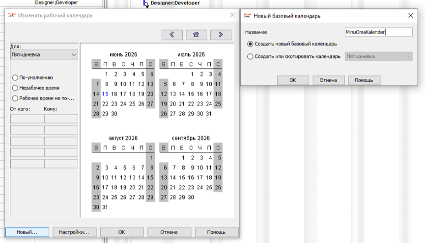
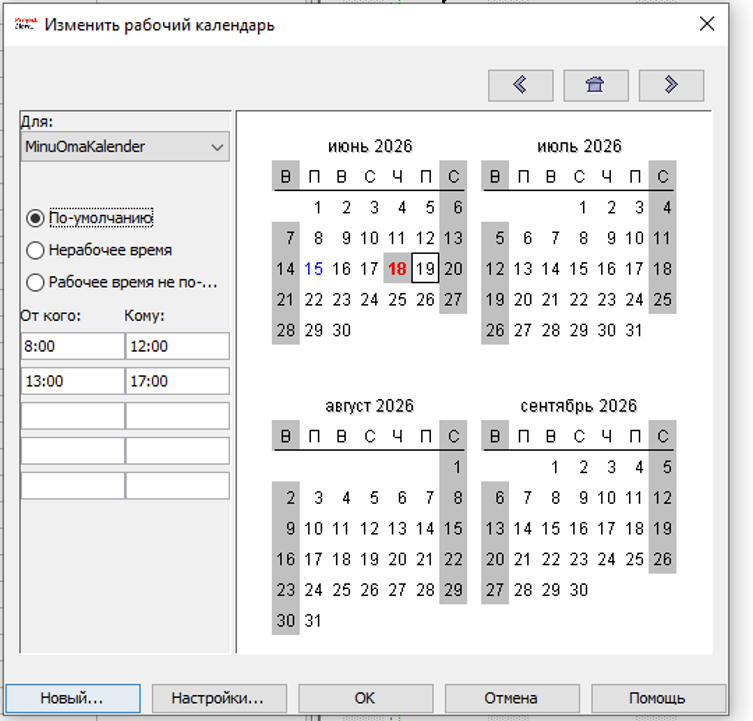
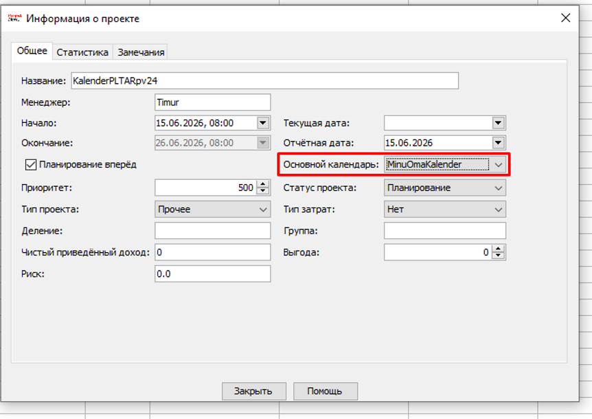

Uue kalendri loomine ja seadistamine ProjectLibre's
ProjectLibre on suurepärane avatud lähtekoodiga tarkvara, mis võimaldab hallata projekte ja kohandada reaalset tööajagraafikut spetsiaalsete kalendrite abil.
1. Uue baaskalendri loomine
Uue kalendri loomiseks liigu ülemisse menüüsse Tööriistad ja klõpsa nupule Kalender. Avanenud aknas vajuta nupule Uus..., sisesta kalendri nimeks MinuOmaKalender ning vali režiim "Loo uus baaskalender".

2. Tööaja ja erandite seadistamine
Pärast kalendri loomist saab määrata standardsed tööpäevad ja muuta konkreetsed kuupäevad puhkepäevadeks või märkida eritööajad (näiteks lõunapausid või lühendatud tööpäevad).

3. Kalendri määramine projektile
Selleks, et loodud kalender hakkaks mõjutama kogu projekti ülesandeid ja kestust, ava menüü Fail -> Information. Vali rippmenüüst "Peamine kalender" oma loodud kalender MinuOmaKalender.
